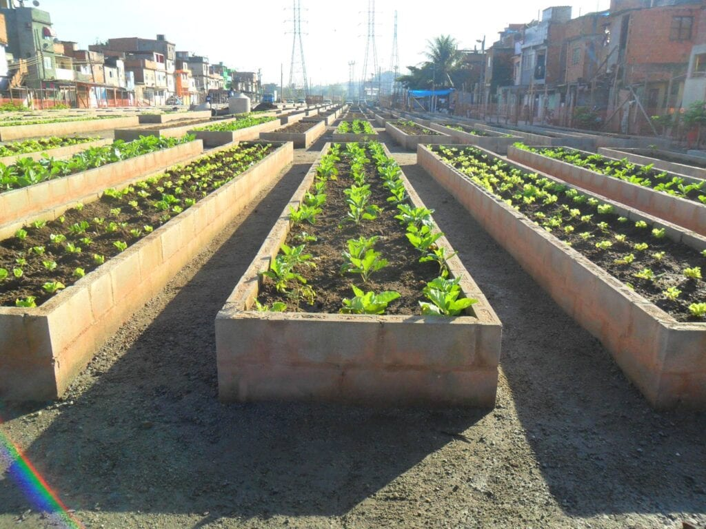
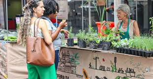
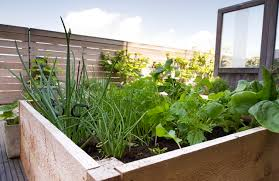

Hortas Comunitárias
Pequenos lotes de terra em áreas urbanas onde residentes locais podem plantar vegetais, ervas e flores. Exemplos incluem os jardins comunitários em Nova York, como os do Brooklyn e do Harlem.
Telhados Verdes
Jardins ou pequenas fazendas instalados nos telhados de edifícios urbanos. Um grande exemplo é a Brooklyn Grange em Nova York, um dos maiores telhados verdes do mundo que produz toneladas de vegetais anualmente.

Mercados de Agricultores Urbanos
Locais onde agricultores vendem diretamente aos consumidores em grandes cidades, como o Union Square Greenmarket em Nova York, oferecendo produtos cultivados localmente.
Cultivo em Pequenos Espaços
Uso criativo de áreas pequenas como varandas, janelas e quintais para cultivo de alimentos. Projetos como o "Windowfarms" incentivam o cultivo vertical de ervas e vegetais em apartamentos.
